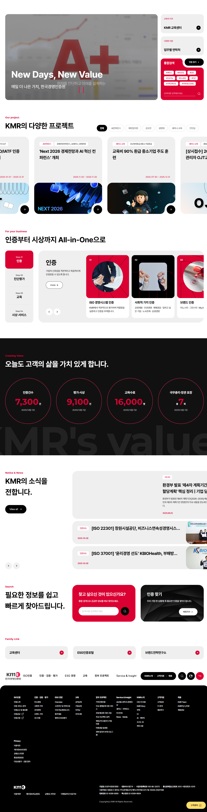
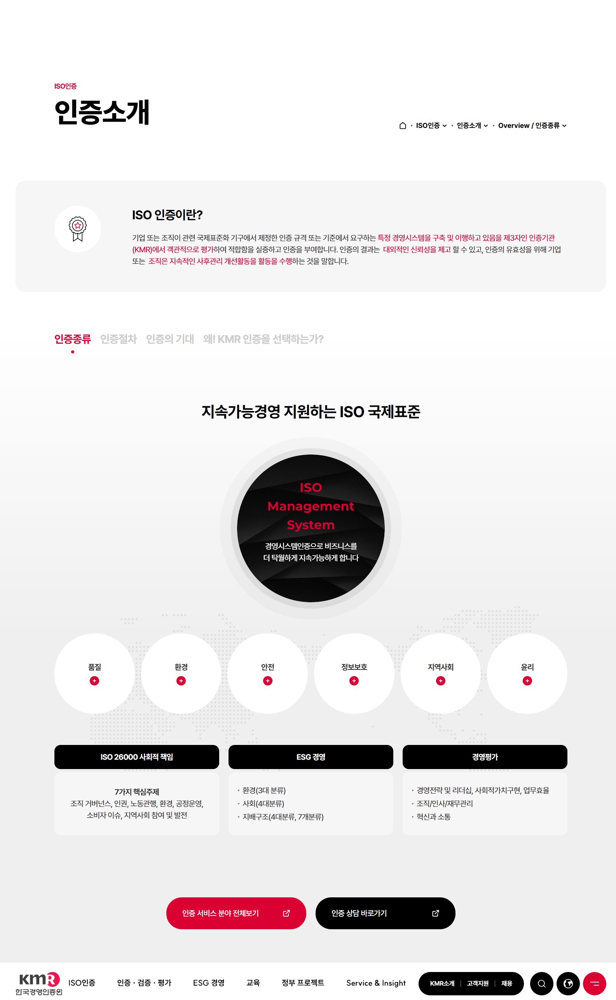
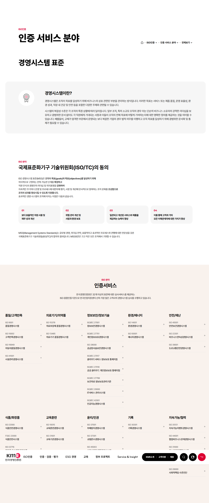
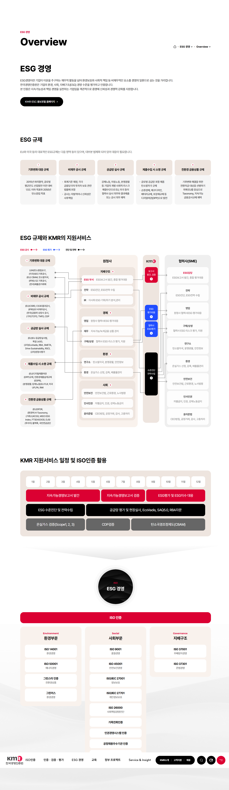
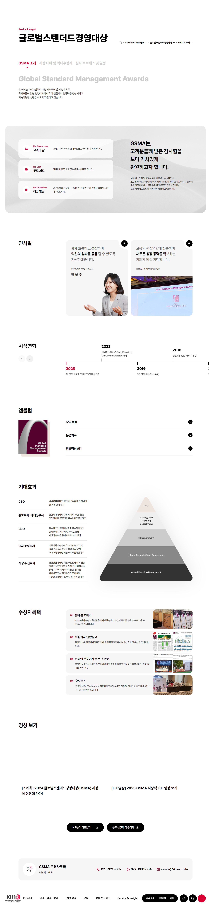

KMR
- YEAR
- 04 2025
- DURATION
-
- 2 weeks of production
- 4 days of maintenance
- FIELDS
-
- TEAM PROJECT
- PUBLISHING
- MARKUP
- CMS
- VS
- SCSS
- HOW I WORKED ON IT
-
한국경영인증원(KMR)은 ISO/경영시스템 인증, 제품 인증, 경영평가, 교육 및 심사 사업 등을 수행하는 글로벌 인증 전문 기관입니다. 본 프로젝트에서는 Figma 기반의 시안을 분석하고, 메인 페이지 퍼블리싱을 중심으로 작업했습니다. 초반 단계에서 공통 CSS 구조와 HTML 가이드 파일을 구성하여 이후 서브페이지 작업자들이 일관된 코드 스타일로 협업할 수 있도록 기반을 마련했습니다.
대규모 공공기관 사이트 특성상 반복되는 요소가 많았기 때문에, 재사용성과 유지보수를 고려한 마크업 구조 설계에 집중했습니다.
#OVERVIEW
기존 사이트의 디자인이 주는 공공기관 특유의 딱딱한 이미지를 벗어나 컬러, 폰트 등 비주얼적인 요소를 전체적으로 재정비한 모습입니다.
변화하는 사용자 환경에 맞춰 반응형 웹으로 구성했으며 복잡한 인증·평가 정보 구조를 직관적으로 재구성해 이용자의 접근을 개선했습니다.
또한 웹 접근성 표준을 충족하고, 정보보호 관리체계 인증을 고려한 기술적 요소를 함께 설계했습니다.
#WORK_FLOW
서브페이지가 분야별로 다양하고 규모가 컸기 때문에 전체 페이지의 일관성을 유지하기 위한 공통 CSS 구조를 정의하고, 메인 작업자로서 각 영역 담당자들이 동일한 코드 규칙으로 작업할 수 있도록 가이드 역할을 수행했습니다. 메인 페이지 퍼블리싱을 중심으로 프로젝트의 기준점을 마련하며, 최종 산출물의 통일성과 완성도를 책임졌습니다.
- 작업 과정
- 디자인 시안 분석
- 가이드 구축
- 퍼블리싱
- QA · 유지보수
#DESIGN_SYSTEM
공공기관의 딱딱함을 친근한 톤으로 개선하여 비주얼 정리 후,
사전에 색상 팔레트와 타이포 조합의 미니 보드로 정리하여 가이드 파일로 만들었습니다.
#KEY_CHALLENGE
메인 페이지는 프로젝트 내에서 처음 담당한 대형 페이지로, 디자인 시안을 효율적으로 코드화하고 반응형 구조를 세밀히 조정하며 퍼블리싱 전체 흐름을 익힐 수 있었습니다. 이를 통해 코드 구성의 체계화, 협업 시 커뮤니케이션 방식, 유지보수를 고려한 설계 감각을 향상시킬 수 있었습니다.
이 프로젝트를 진행하면서 가장 어려움을 겪었던 부분은 분량이나 레이아웃 구현이 아닌, 인증 서비스 분야 서브페이지의 상단 플로팅 메뉴(LNB)였습니다. 시안이 여러 차례 수정되며 플로팅 메뉴의 방향이 자주 바뀌었고, 초기에는 LNB를 좌측에 배치하는 안이 제시되었습니다. 하지만 메뉴 수가 많고 좌측 공간이 협소해 실제 적용에는 한계가 있었습니다.
최종적으로는 메뉴를 상단으로 옮기면서 공간 활용성과 가시성을 동시에 확보할 수 있는 구조로 정리하게 되었습니다.
#SITE_PREVIEW
-

-

-

-

-
